3 The Laws of Probability
In the last chapter, we have learned some basic descriptive summaries of sample data. From this chapter onward, we will learn how to generalize and make conclusions about the population from the information of the sample, i.e., we will learn about statistical inference. For such a purpose, we should first learn about probability and its laws, which will help us model the randomness of the sample.
3.1 What is Probability?
3.1.1 Randomness
In Chapter 1, we learned something about randomness:
we should randomly select the individuals in our population in order to obtain a representative sample of the population
we should randomly assign the experimental conditions to sample units so that the effect of confounding variables are neutralized abd we can make causal conclusions from the experiment.
In Chapter 1’s context, randomness meant equal chance of happening, which implies that the selection of individuals or the assignment of experiment conditions should be non-deterministic.
I guess one can argue whether true randomness exists or whether everything happens by cause and effect. However, let us agree on this definition: Randomness is the state of being unable to be predicted with certainty.
3.1.2 Probabilistic Experiment
Following the definition of randomness, we have the definition of a probabilistic experiment8: a repeatable process in which the complexity of the underlying system leads to an outcome that cannot be known ahead of time.
Example 3.1 Tossing a coin can be thought of as a probabilistic experiment. First, we also can toss the coin again and again, i.e., we can repeat the coin toss. Second, even though we can argue that the result of tossing a coin may depend on
the technique used to toss the coin
the force used to toss the coin
the air condition of where the coin is tossed
the individual who tosses the coin
the size of the coin
etc.,
however, since there are considerably many factors that can affect the outcome of a coin toss, it is hard for us to tell exactly whether the outcome is head or tail. Hence, we say that the outcome is random and a coin toss is a probabilistic experiment.
Other examples can be: rolling a die, drawing a card from a playing cards, rotating a spinner, etc.
Some terminologies related to probabilistic experiments:
run/trial: a repetition of the probabilistic experiment.
sample space: the collection (set) of all possible outcomes.
The outcomes in the sample space must be defined in a way such that they are mutually exclusive (no overlap) and collectively exhaustive (represent all possible scenarios)
Notation: \(\Omega\) (pronounce “Omega”).
event: a subset of possible outcomes (i.e., some, but not necessarily all possible outcomes).
These can be simple events (made up of one possible outcome) or a compound events (made up of two or more outcomes)
Notation: capital letters, for example \(A, B, C\), etc.
Example 3.2 Two coins are tossed and their faces are recorded. Let \(H\) denote “head” and \(T\) denote “tail”.
the sample space: \(\Omega = \{HH, HT, TH, TT\}\).
Here \(\{\}\) mathematically denote a set (collection).
The sample space is not \(\{HH, TT\}\) because it is not exhaustive, i.e., it does not contain all possible outcomes.
the event that we observe two heads: \(A = \{HH\}\).
- This is a simple event.
the event that we observe at least one tail: \(B = \{HT, TH, TT\}\).
- This is a compound event since it is made up of multiple outcomes in \(\Omega\).
Note here that \(A\) and \(B\) are just our convenient choice of notation, you can also choose other capital letters to represent any other event.
Example 3.3 A fair six-sided die is rolled and the value obtained is recorded.
the sample space: \(\Omega = \{1, 2, 3, 4, 5, 6\}\)
the event that we observe an even number: \(A = \{2, 4, 6\}\)
the event that the outcome is at most 3: \(B = \{1, 2, 3\}\).
Exercise 3.1 Two students are randomly selected and asked if their rooms have an independent washroom (Y) or not (N). The experiment records the response from both students.
Define the sample space \(\Omega\)
List the outcomes in event \(A\): both students have an independent washroom. Is this a simple or compound event?
List the outcomes in event \(B\): both students made the same choice. Is this a simple or compound event?
List the outcome in event \(C\): at most one student have an independent washroom. Is this a simple or compound event?
3.1.3 Three Views of Probability
Probability is generally defined as a numeric measure of chance. However, there have been three different major views on how to understand probability.
subjective probability: probability is a measure of a person’s belief that some given event will occur.
this definition fits the intuitive sense of probability
challenge: it can be inconsistent because beliefs can vary from one person to another.
classical probability: probability of an event is the proportion of possible outcomes contained in the event compared to the sample space.
mathematically, the probability of an event \(A\) is denoted as \(\mathbb{P}(A)\) and is defined as \[\mathbb{P}(A) = \frac{\text{number of outcomes in } A}{\text{number of outcomes in }\Omega}\]
this definition is simple and can be applied to many situations assuming that the outcomes are equally likely
challenge: it cannot be applied to situations where
the outcomes are not equally likely, or
there are infinitely many possible outcomes.
empirical probability (or frequentist probability, or relative frequency probability): the proportion of times that the event occurs when the probabilistic experiment is repeated a very large (infinite) number of times.
mathematically, suppose the probabilistic experiment is repeated \(n\) times (\(n\) is very large), then the probability of event \(A\) is \[\mathbb{P}(A) = \lim_{n\to\infty}\frac{\text{number of times that outcomes in $A$ are obtained}}{n},\] i.e., \(\mathbb{P}(A)\) is the relative frequency that the outcomes in \(A\) are obtained in \(n\) repetitions of the probabilistic experiment.
cover more cases than classical probability
intuitively agree with classical probability when the outcomes are equally likely
challenge: how many times is considered “very large” or large enough to approximate the limit in infinite repetitions?
Example 3.4 Consider tossing a fair six-sided die. The sample space is \(\Omega = \{1, 2, 3, 4, 5, 6\}\).
Because the die is fair, the outcomes are equally likely. Then, according to classical probability:
the probability to observe each one of the possible outcomes is \(\frac{1}{6}\)
the probability to observe an even number is \[\frac{|\{2,4,6\}|}{|\{1,2,3,4,5,6\}|} = \frac{3}{6} = \frac{1}{2}\] Notation: \(|A|\) denotes the number of elements of a set \(A\).
According to empirical probability, suppose we roll the die for a large number of times and receive, for example \[4 3 6 5 2 1 6 6 2 3 6 1 1 5 1 4 3 3 6 6 4 1 2 2 5 3 6 4 6 3 2 3 1 2 1 3 4 5 6 2 3 4 3 2 4 6 1 1 4 1...\] then each number appears roughly \(\frac{1}{6}\) of the times and even numbers appears roughly half (\(\frac{1}{2}\)) of the times. Hence, the probability to observe an even number is \(\frac{1}{2}\).
3.1.4 Mathematical Definition of Probability
Although the three views of probability differ, all three agree on the mathematical definition of probability: Probability is a function \(\mathbb{P}\) that maps events to non-negative numbers, which satisfies
\(0 \le \mathbb{P}(A) \le 1\) for all events \(A\)
- this means a probability must be non-negative and must not exceed 1.
\(\mathbb{P}(\Omega) = 1\)
- this means the probability of all possible outcomes must be exactly 1.
\(\mathbb{P}(\text{union of mutually exclusive events}) = \text{sum of } \mathbb{P}( \text{individual events})\)
if the sample space is finite, i.e., there are finite number of possible outcomes. This implies that the probability of an event is the sum of probability of each individual outcome of the event. We will discuss the case of infinite sample space in Chapter 4.
we will learn more about this property in the subsequent sections.
Notes: Up to this point we discussed at length about what is probability. The aim is to help you get a good sense of what probability is. In statistics, many of the times we use the empirical view of probability, some of the times we use the subjective probability. However, for now, it is most important that you know the classical and mathematical definitions of probability.
Exercise 3.2 An experiment consists of rolling a special fair 8-sided die and recording the number that faces up. All of the numbers are equally likely to occur. Find the probability of each following event.
\(A\): obtain an even number
\(B\): obtain a number divisible by 4
\(C\): obtain a number less than 6
\(D\): obtain a number that is divisible by 2 and 3
3.2 Addition Rule
Probability is a function of events, and events are basically sets of possible outcomes. Therefore, to learn about probability calculation, we first need to go over some basics about mathematical sets and Venn diagram.
3.2.1 Venn Diagram
It is useful to visualize the relationship existing among the events (sets). Venn diagram is a way to illustrate such relationships visually. A Venn diagram is made up of
a rectangle that represents the sample space \(\Omega\)
circles within the rectangle which represents the events of interest in \(\Omega\)
Example 3.5 Consider tossing 2 coins and the following events
\(A\): two heads are obtained
\(B\): one head is obtained
\(C\): no heads are obtained
The Venn diagram that represents these three events is
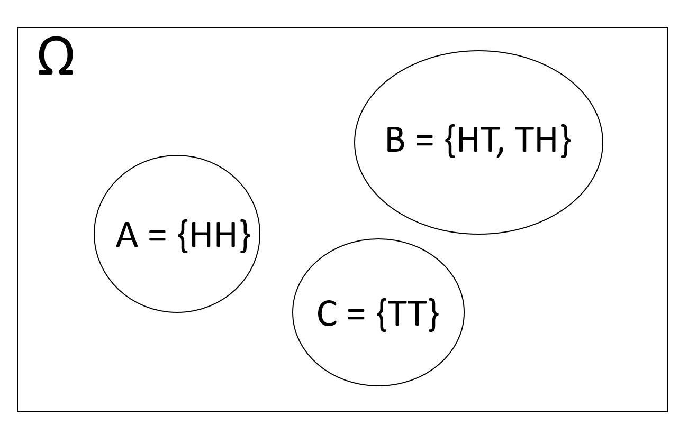
Example 3.6 Consider rolling a six-sided die. We found in Example 3.3 that \(\Omega = \{1,2,3,4,5,6\}\). Consider the following events \[E = \{1,2,3\}, \hspace{3mm} F = \{2,3,4\}, \hspace{3mm} G = \{1, 5\}\] The Venn diagram that represents these three events is
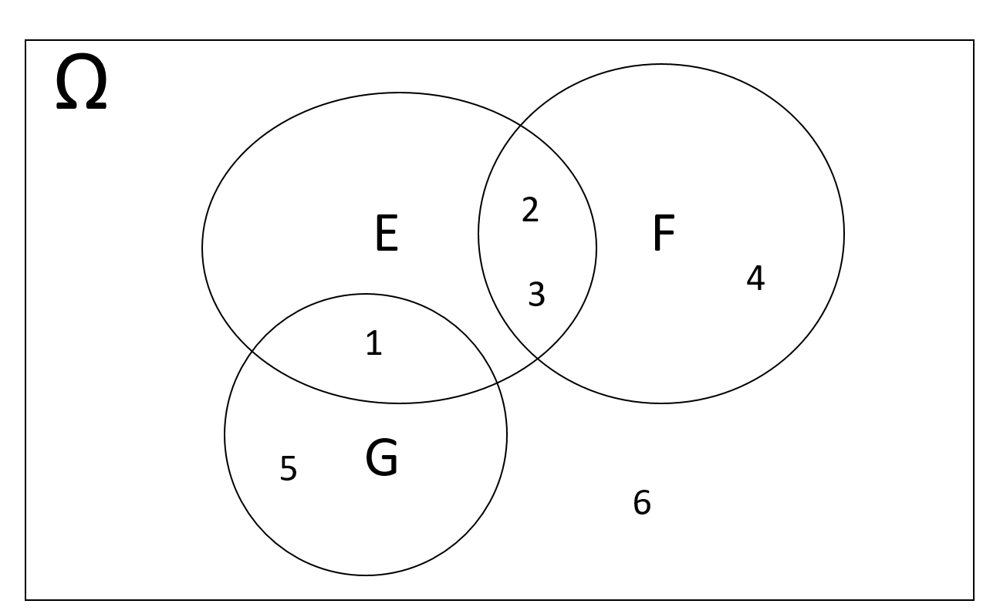
Exercise 3.3 Consider a probabilistic experiment with sample space \(\Omega = \{0,1,2,3,4,5,6,7,8,9\}\) and the events
\[ A = \{0,1,2,7,8,9\}, \hspace{5mm} B = \{0,1,2,4,8\}, \hspace{5mm} C = \{0,1,2,9\}, \hspace{5mm} D = \{1,4,9\} \]
Represent these events using a Venn diagram.
3.2.2 Set Operations
Intersection: The intersection of \(A\) and \(B\) is a set that contains all outcomes in both \(A\) and \(B\)
Notation: \(A \cap B\) (pronounce “A intersection B” or “A and B”)
Visually:
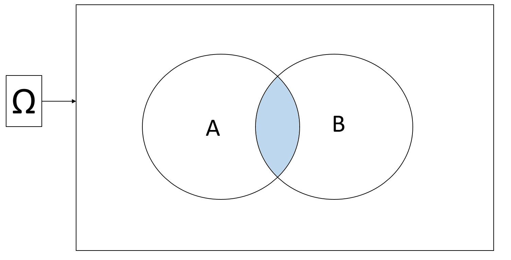
Union: the union of \(A\) and \(B\) is a set that contains all outcomes that either in \(A\) or in \(B\), or in both \(A\) and \(B\)
Notation: \(A \cup B\) (pronounce “A union B” or “A or B”)
Visually:
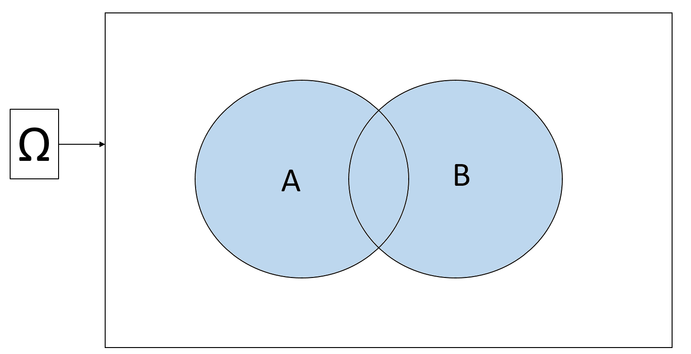
Complement: The complement of a set \(A\) is a set that contains all outcomes that are not in \(A\).
Notation: \(A^c\) (pronounce “A complement” or “not A”)
Visually:
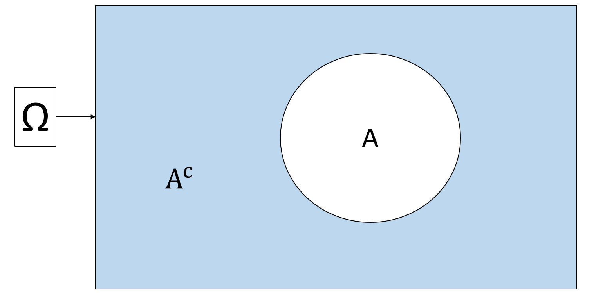
\(A \cap A^c = \emptyset\) (where \(\emptyset\) means “empty set”, i.e., nothing)
\(A \cup A^c = \Omega\)
De Morgan’s laws: Look at the below Venn diagram, we have what is called the De Morgan’s laws for sets
\((A\cup B)^c = A^c \cap B^c\)
\((A\cap B)^c = A^c \cup B^c\)
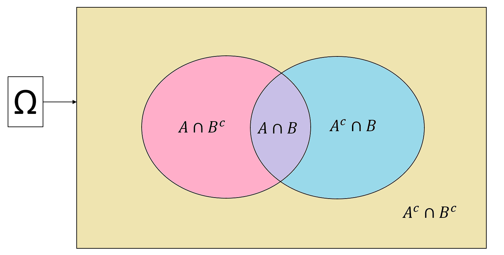
Example 3.7 Let us look at the first equality of the De Morgan’s law: \((A\cup B)^c = A^c \cap B^c\)
\(A\cup B\) is the pink, purple, and blue regions \(\Rightarrow\) \((A\cup B)^c\) is the yellow region
\(A^c\) is the yellow and blue region, \(B^c\) is the yellow and pink region \(\Rightarrow\) \(A^c \cap B^c\) is also the yellow region.
Hence, \((A\cup B)^c = A^c \cap B^c\).
Exercise 3.4 Use the same way as Example 3.7 to prove the second equality of the De Morgan’s law.
3.2.3 Addition Rule for Mutually Exclusive Events
Mutually exclusiveness: \(A\) and \(B\) are called mutually exclusive if and only if there is no possible outcome lying in both \(A\) and \(B\).
Notation: \(A \cap B = \emptyset\)
Visually:
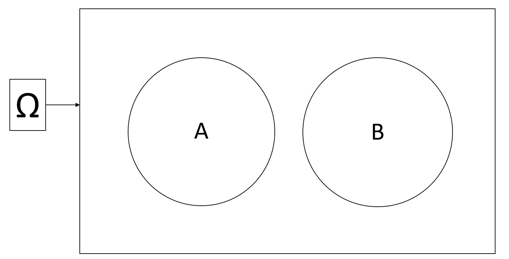
Addition rule: From the third requirement of the mathematical definition of probability in Section 3.1.4, we have:
\[\text{If } A \cap B = \emptyset, \text{then }\mathbb{P}(A \cup B) = \mathbb{P}(A) + \mathbb{P}(B)\]
Example 3.8 Consider \(\Omega = \{1,2,3,4,5,6\}\) and events \(A = \{1,2\}\) and \(B = \{5\}\). Suppose that the outcomes are equally likely, then \[\mathbb{P}(A) = \frac{2}{6} = \frac{1}{3}, \hspace{5mm} \text{and} \hspace{5mm} \mathbb{P}(B) = \frac{1}{6}\]
Because \(A\) and \(B\) are mutually exclusive, \[\mathbb{P}(A\text{ or }B) = \mathbb{P}(A \cup B) = \mathbb{P}(A) + \mathbb{P}(B) = \frac{1}{3} + \frac{1}{6} = \frac{1}{2}.\]
Example 3.9 Since \(A \cap A^c = \emptyset\) and \(A\cup A^c = \Omega\), so \[\mathbb{P}(A) + \mathbb{P}(A^c) = \mathbb{P}(A\cup A^c) = \mathbb{P}(\Omega) = 1\] because based on the mathematical definition of a probability, \(\mathbb{P}(\Omega) = 1\). From here, we have \[\mathbb{P}(A^c) = 1 - \mathbb{P}(A)\]
Exercise 3.5 Prove that \(\mathbb{P}(\emptyset) = 0\). Hint: Use the fact that \(\Omega^c = \emptyset\).
3.2.4 Addition Rule for Non-mutually-exclusive Events
Now consider the general case of two events \(A\) and \(B\), not necessarily mutually exclusive. Again look at the Venn diagram
We have \[\begin{align*} \mathbb{P}(A\cup B) & = \mathbb{P}(A \cap B^c) + \mathbb{P}(A \cap B) + \mathbb{P}(A^c \cap B) \\ & = \Big[\mathbb{P}(A \cap B^c) + \mathbb{P}(A \cap B) \Big] + \Big[\mathbb{P}(A^c \cap B) + \mathbb{P}(A \cap B)\Big] - \mathbb{P}(A \cap B) \\ & = \mathbb{P}(A) + \mathbb{P}(B) - \mathbb{P}(A \cap B) \end{align*}\]
where the first equation is because the three events are mutually exclusive, the second equation add then subtract \(\mathbb{P}(A \cap B)\). In words, the probability of \(A\cup B\) is the sum of the probability of the pink, purple, and blue regions. When we sum the probability of \(A\) (pink and purple) and the probability of \(B\) (blue and purple), we count the purple region twice. Thus, we need to minus the purple region to get the probability of \(A\cup B\).
In summary, the general addition rule for any event \(A\) and \(B\) is \[\mathbb{P}(A\cup B) = \mathbb{P}(A) + \mathbb{P}(B) - \mathbb{P}(A \cap B)\]
Example 3.10 Suppose that I am collecting the sample for my rent study. The probability of selecting a female student is \(0.6\), the probability of selecting an undergraduate student is \(0.3\), and the probability of selecting a female undergraduate student is \(0.2\). What is
the probability of selecting a non-female student?
the probability of selecting either a female student or an undergraduate student?
the probability of selecting a student who is not female and not undergraduate?
Solution:
Let
\(A\) be the event of selecting a female student
\(B\) be the event of selecting an undergraduate student, then
\[\mathbb{P}(A) = 0.6, \hspace{5mm}\mathbb{P}(B) = 0.3, \hspace{5mm} \text{and} \hspace{5mm}\mathbb{P}(A\cap B) = 0.2\]
\(\mathbb{P}(A^c) = 1-\mathbb{P}(A) = 1 - 0.6 = 0.4\).
\(\mathbb{P}(A\cup B) = \mathbb{P}(A) + \mathbb{P}(B) - \mathbb{P}(A\cap B) = 0.6 + 0.3 - 0.2 = 0.7\)
\(\mathbb{P}(A^c \cap B^c) = \mathbb{P}\Big[(A\cup B)^c\Big] = 1 - \mathbb{P}(A\cup B) = 1-0.7 = 0.3\).
Exercise 3.6 Continue with the rent study. Suppose
the probability of selecting an undergraduate student is \(0.3\),
the probability of selecting an Arts students is \(0.2\),
the probability of selecting an Engineering student is \(0.4\),
the probability of selecting either an undergraduate student or an Arts student is \(0.4\).
What is the probability of
selecting a graduate student (suppose there are only two types of students: undergraduate and graduate)?
selecting an undergraduate Arts student?
selecting a student who major in either Arts or Engineering?
3.3 Multiplication Rule
3.3.1 Conditional Probability
In Example 3.1, we discussed that the results of tossing a fair coin can be affected by many factors. Usually, for a fair coin, we believe that there is half a chance to observe a head and half a chance to observe a tail. But, what if we know that the person will be tossing the coin is, say, myself, do I know better about the probability? That is, will the half-half probabilities change? Do I myself tend to toss heads slightly more often than tails? This is the main idea of conditional probability.
The conditional probability \(\mathbb{P}(A|B)\) is the probability of event \(A\) given event \(B\), i.e. the probability that event \(A\) happens if event \(B\) happens with certainty.
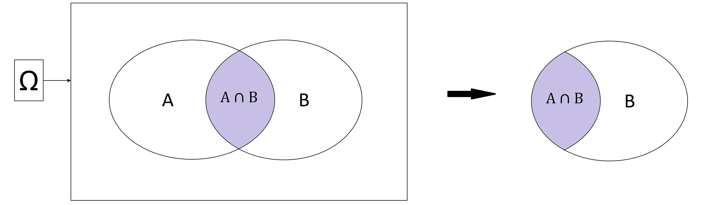
Let us look at the picture above. If event \(B\) happens with certainty, it means that only the outcomes inside of \(B\) will be able to happen. This shrinks our sample space from \(\Omega\) to \(B\). Now, the only cases where \(A\) can happen are when the outcomes lie in both \(A\) and \(B\), i.e., \(A\cap B\). So the conditional probability of \(A\) given \(B\) is the proportion of outcomes of \(A\cap B\) in event \(B\), that is, \[\mathbb{P}(A|B) = \frac{\mathbb{P}(A\cap B)}{\mathbb{P}(B)}\]
Example 3.11 Continue with Example 3.10, we know the probability of selecting an undergraduate student is \(\mathbb{P}(B) = 0.3\) and the probability of selecting a female undergraduate student is \(\mathbb{P}(A\cap B) = 0.2\). So the probability of selecting a female student given the student is an undergraduate is \[\mathbb{P}(A|B) = \frac{\mathbb{P}(A\cap B)}{\mathbb{P}(B)} = \frac{0.2}{0.3} = \frac{2}{3}\]
3.3.2 Multiplication Rule
We have the multiplication rule
\[\mathbb{P}(A\cap B) = \mathbb{P}(A| B)\mathbb{P}(B)\]
3.3.3 Independence
We say that event \(A\) is independent of event \(B\) if we know that no matter \(B\) happens or not, the probability of \(A\) does not change, that is \[\mathbb{P}(A|B) = \mathbb{P}(A)\]
Exercise 3.7 Prove that if \(A\) is independent of \(B\), then \(B\) is independent of \(A\). Hint: Use the definition of \(\mathbb{P}(A|B)\) and the definition of \(A\) being independent of \(B\).
From Exercise 3.7, we say that two events \(A\) and \(B\) are independent if either \[\mathbb{P}(A|B) = \mathbb{P}(A) \hspace{5mm} \text{or} \hspace{5mm} \mathbb{P}(B|A) = \mathbb{P}(B) \hspace{5mm} \text{or} \hspace{5mm} \mathbb{P}(A \cap B) = \mathbb{P}(A)\mathbb{P}(B)\]
3.4 Law of Total Probability
3.4.1 Conditional Probability of the Complement
In Section 3.3.1, we discussed that \(\mathbb{P}(A|B)\) is the proportion of outcomes in both \(A\) and \(B\) out of the outcomes in \(B\). Therefore, \(1-\mathbb{P}(A|B)\) is the remaining proportion of outcomes not in \(A\) and but in \(B\). In the diagram below,
\(\mathbb{P}(A|B)\) is the ratio of the pink part to the whole circle of \(B\)
\(1-\mathbb{P}(A|B)\) is the ratio of the blue part to the whole circle of \(B\). The blue part contains the outcomes that is not in \(A\) but in \(B\), i.e., \(A^c \cap B\).
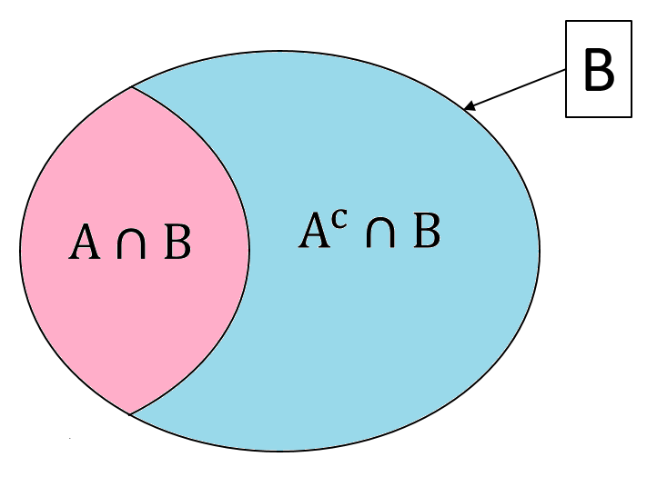
So, we have the following equality for the conditional probability of the complement
\[\mathbb{P}(A^c|B) = 1-\mathbb{P}(A|B)\]
Example 3.12 Continue with Example 3.11, the probability of selecting a non-female student given that the student is an undergraduate is \[\mathbb{P}(A^c|B) = 1 - \mathbb{P}(A|B) = 1 - \frac{0.2}{0.3} = \frac{1}{3}\]
3.4.2 Law of Total Probability
Let us come back to the whole sample space \(\Omega\) in the diagram below. We see that \(A\) (pink) and \(A^c\) (blue) divide the sample space \(\Omega\) into two mutually exclusive regions. Effectively, they also divide \(B\) into two mutually exclusive parts: \(A \cap B\) and \(A^c \cap B\). This means \[\mathbb{P}(A\cap B) + \mathbb{P}(A^c\cap B) = \mathbb{P}(B)\]
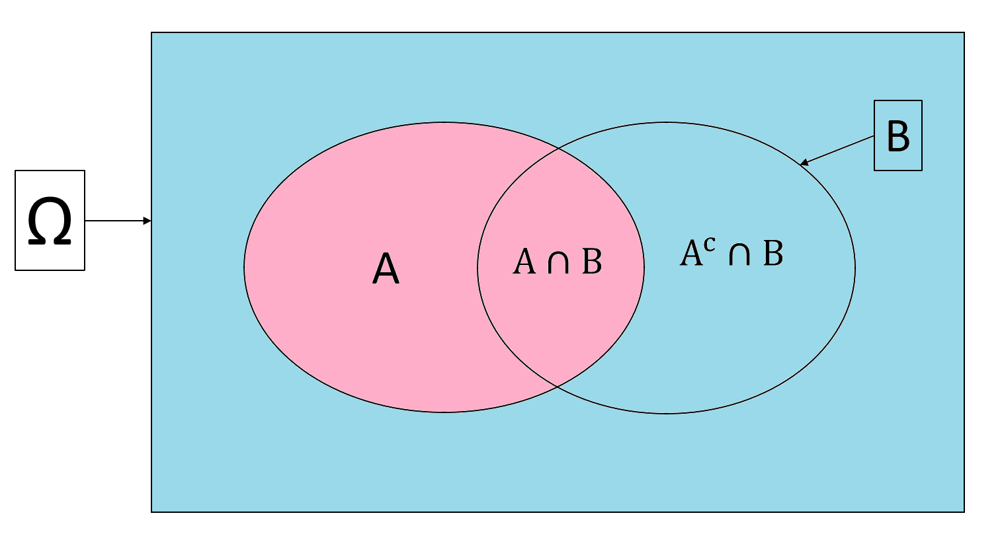
This law similarly applies to all events \(A_1, A_2, ..., A_n\) that are mutually exclusive and make up the sample space \(\Omega\). This is called the law of total probability:
\[\text{If }A_1 \cup A_2 \cup ... \cup A_n = \Omega \text{ and } A_i\cap A_j = \emptyset \text{ for all }i\ne j, \text{ then } \mathbb{P}(B) = \sum_{i=1}^n \mathbb{P}(B\cap A_i)\]
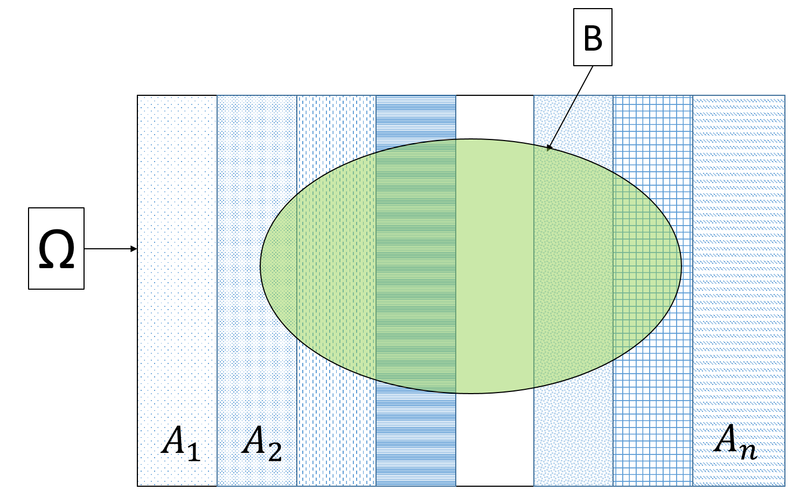
Look at the above diagram, the events \(A_1, A_2, ..., A_n\) divide the sample space \(\Omega\) into mutually exclusive parts, and thus effectively also divide \(B\) into mutually exclusive parts \(A_1\cap B\), \(A_2\cap B\), …, \(A_n\cap B\). When we add up these parts we will get \(B\).
Exercise 3.9 Suppose we have the following probabilities of selecting students
| Arts | Engineering | Environment | Health | Math | Science | |
|---|---|---|---|---|---|---|
| Female | \(0.059\) | \(0.039\) | \(0.043\) | \(0.077\) | \(0.099\) | \(0.054\) |
What is the probability of selecting a female student?
What is the probability of selecting an Engineering student given the student is female?
What is the probability of selecting a non-Math student given the student is female?
Combining the law of total probability and the multiplication rule, we have
\[\mathbb{P}(B) = \sum_{i=1}^n\mathbb{P}(B\cap A_i) = \sum_{i=1}^n\mathbb{P}(B|A_i)\mathbb{P}(A_i)\]
Exercise 3.10 Use the law of total probability to prove the conditional probability of the complement.
From Exercise 3.10, we know that the conditional probability of the complement is just a special case of the law of total probability where the mutually exclusive events making up the sample space are \(A\) and \(A^c\).
3.4.3 Tree Diagram
Consider the example below
Example 3.13 Suppose in UWaterloo, \(40\%\) of students are graduate students. \(60\%\) of graduate students choose rooms that are more than 15 minutes away from school, while \(80\%\) of undergraduate students choose rooms that are less than 15 minutes away from school. Then, what is the probability that students choose rooms that are less than 15 minutes away from school?
This example may seem a lot more difficult than the ones we considered in this lesson so far, but trust me, you now already have all the probability laws you need to solve this problem.
However, the wording may be confusing. A great way illustrate the events, their relationships and probabilities more clearly is to draw a tree diagram. A tree diagram consists of
nodes: at each node, a choice is made, i.e., from this node we list all the mutually exclusive events for the choice
branches: at each branch, write the probability \(\mathbb{P}(|...)\) where “…” are the events that occurred before \(A\).
Example 3.14 Consider an experiment where we flip a coin twice. Let us denote
\(H_1\): the event that we observe a head at the first coin toss
\(T_1\): the event that we observe a tail at the first coin toss
\(H_2\): the event that we observe a head at the second coin toss
\(T_2\): the event that we observe a tail at the second coin toss
Then \(H_1\) and \(T_1\) are mutually exclusive and they make up the sample space for the results of coin 1. \(H_2\) and \(T_2\) are mutually exclusive and they make up the sample space for the results of coin 2. Thus we can draw the tree diagram as follows.
Example 3.15 Now, let us come back to Example 3.13. Let
\(G\) be the event that the student is a graduate student. Then the event that the student is an undergraduate student is \(G^c\).
\(T\) be the event that the student chooses a room that is less than 15 minutes away from school. Then the event that the student chooses a room that is more than 15 minutes away from school is \(T^c\).
We can make the following tree diagram
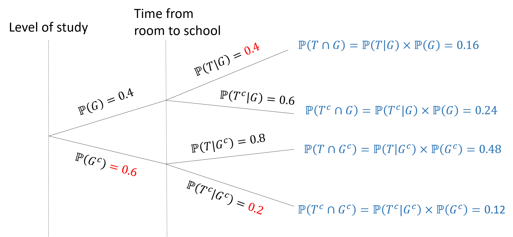
in which we
calculate the red probabilities using the complement equality.
calculate the blue probabilities using the multiplicative rule.
To calculate the probability that students choose rooms that are less than 15 minutes away from school, we use the law of total probability: \[\mathbb{P}(T) = \mathbb{P}(T\cap G) + \mathbb{P}(T\cap G^c) = 0.48+0.16 = 0.64.\]
Exercise 3.11 Use the following information
| Arts | Engineering | Environment | Health | Math | Science | |
|---|---|---|---|---|---|---|
| Female | \(80\) | \(52\) | \(58\) | \(104\) | \(133\) | \(73\) |
| Male | \(63\) | \(157\) | \(46\) | \(62\) | \(177\) | \(120\) |
| Others | \(17\) | \(37\) | \(21\) | \(33\) | \(66\) | \(46\) |
Draw a tree diagram that represent the above probabilities.
Find the probability of selecting a male student
What is the probability of selecting a male student given that the student is from the Environment faculty?
Are the event: the student is non-male-and-female, and the event: the student is from Health faculty independent? Why?
Notes: In the tree diagram examples, we can think of
each node as a categorical variable
the branches coming out of the nodes correspond to different categories of the corresponding variables.
the events are that the categorical variables take the value of each of the available categories.
In other texts (that you can find in books or websites), you can find that they describe the branches as the different ways to do something at the node. This also implies that the branches are just the categories/choices of the node’s variable. We will have a closer look at (random) variables and events in Chapter 4.
Notes: There seem to be a lot of results derived in this lesson. However, you just need to remember the three general rules and how to draw the Venn diagram because all the other results can be retrieved from those tools or laws. Remember that practice makes perfect, try drawing the Venn diagrams or the tree diagrams by yourself, and practice the exercises given in this chapter.
In general, the steps to solve a probability problem is
- Define (give notation for) the events
- Draw a tree diagram with the given information
- Calculate the missing/requested probability using the three laws of probability (addition, multiplication, and the total probability laws)